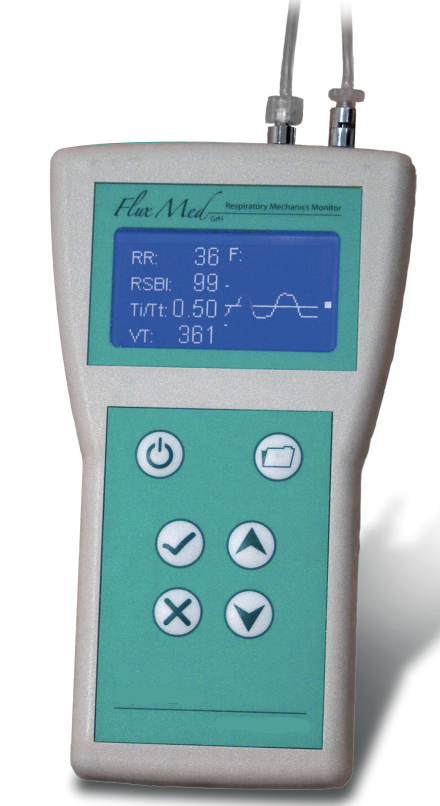
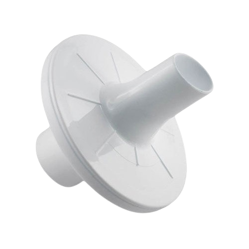
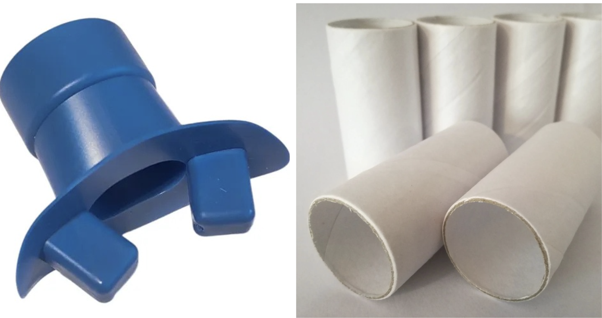
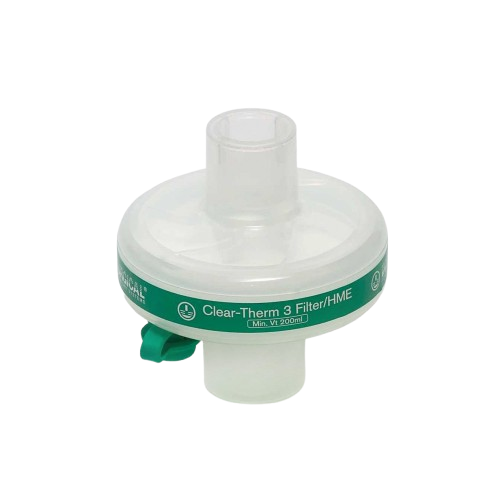
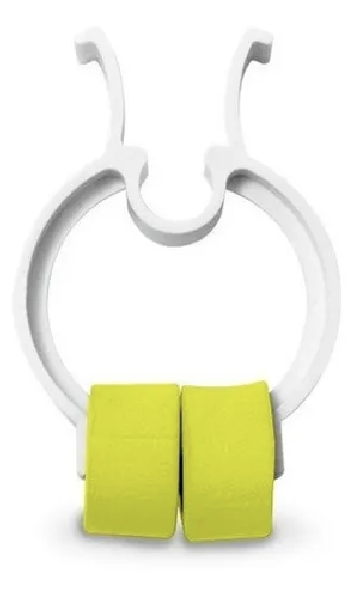
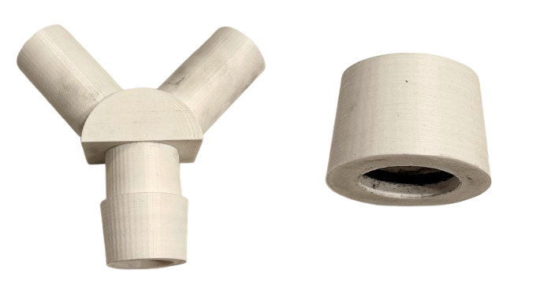
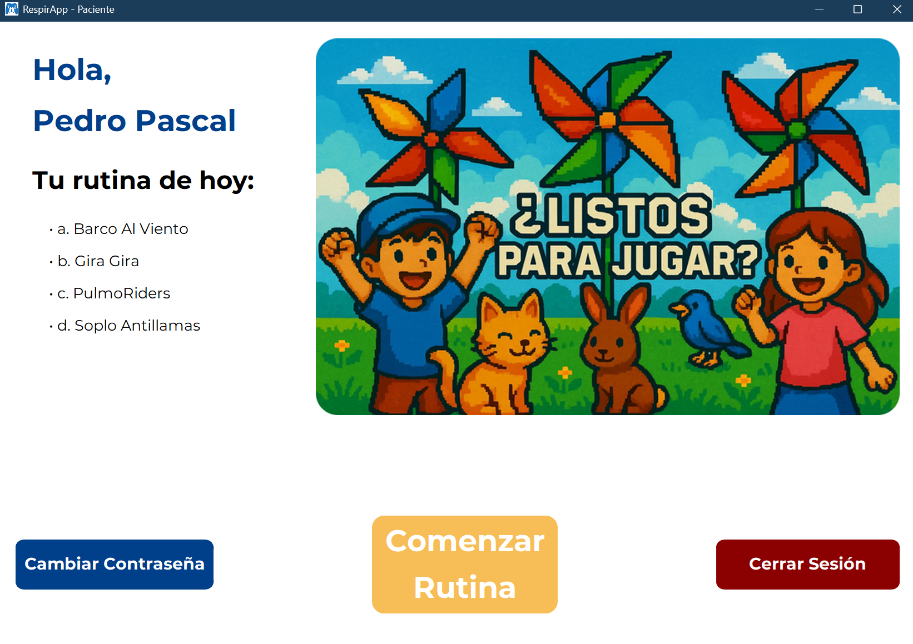
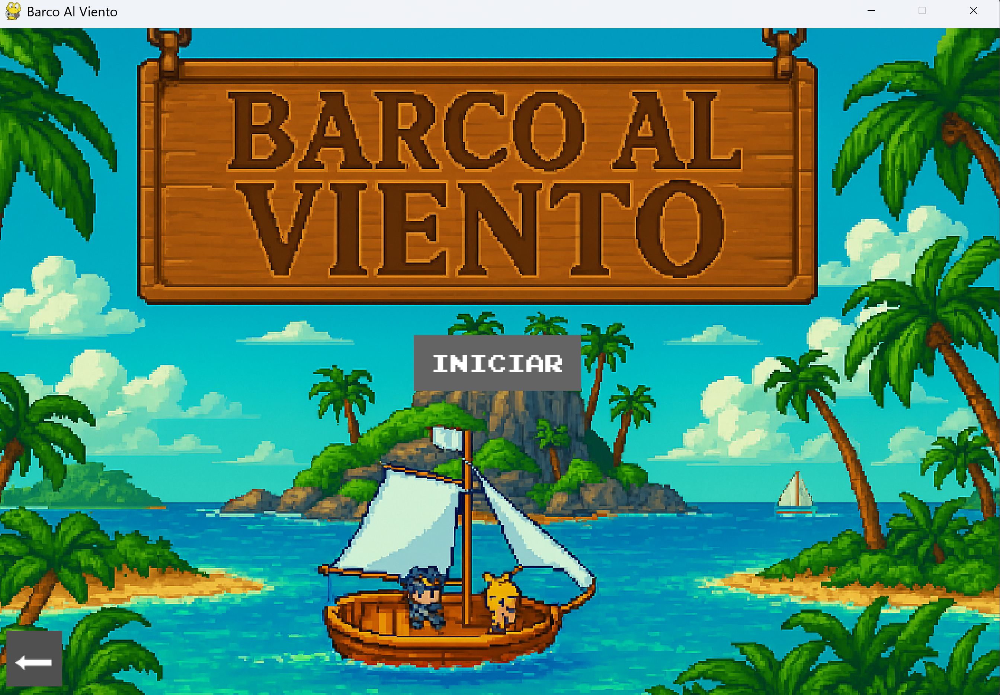
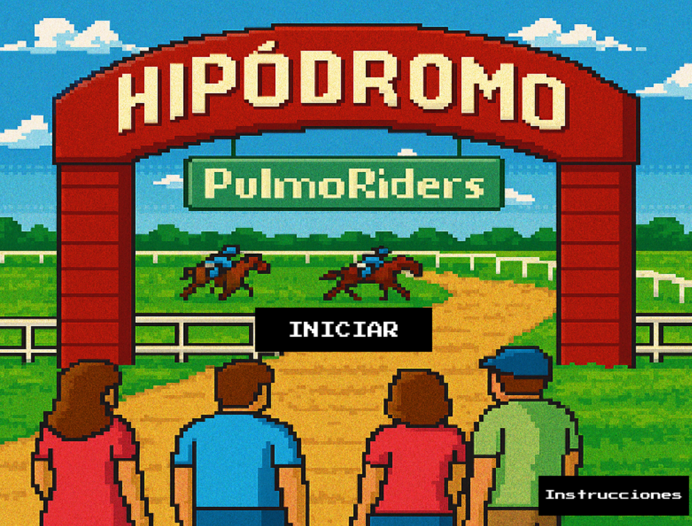
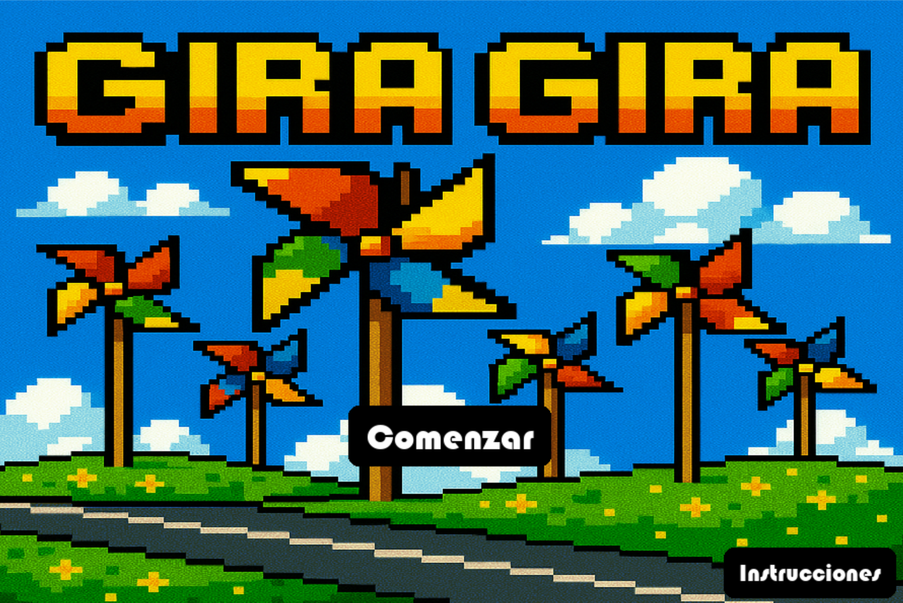

- Sistema operativo: Windows 10 o superior.
- Python 3.8+ instalado.
- Sensor de flujo MBMED® junto al FluxMed GrH.
- Accesorios Recomendados: boquilla espirométrica, filtro HME, clip nasal y obligatoriamente el adaptador 3D para Soplo Antillamas.
- Conexión USB disponible para establecer comunicación serie.
Manual de Usuario – RespirApp
© 2025 RespirApp. Todos los derechos reservados.
1. Consideraciones Generales
RespirApp es una plataforma gamificada diseñada para el entrenamiento respiratorio en población pediátrica mediante el uso del sensor de flujo de MBMED® y su dispositivo FluxMed GrH. GrH. El software integra módulos de adquisición de señal, juegos terapéuticos, gestión de usuarios y generación de reportes clínicos. Este manual describe las funciones principales para administradores, profesionales y pacientes, y provee enlaces a tutoriales de video que muestran el uso de cada componente.
1.1. Requisitos del Sistema

Figura 1: Equipo FluxMed GRH.
1.2. Uso de Boquillas, Filtros y Adaptadores
Para garantizar mediciones respiratorias precisas, seguras y reproducibles, se recomienda utilizar los accesorios complementarios del sensor de flujo. A continuación se detallan los elementos útiles según el diseño técnico de RespirApp.
1.2.1. Boquillas
El sensor puede utilizarse con una boquilla espirométrica para asegurar un sellado adecuado y evitar fugas durante la inspiración y espiración. Existen dos tipos compatibles:
- Boquillas espirométricas rígidas: permiten un flujo constante y son ideales para mediciones más precisas, como PEF o flujo laminar, además de ser antibacteriales y mantener la bioseguridad necesaria.
- Boquillas descartables: recomendadas para uso clínico con múltiples pacientes, garantizan higiene y reducen el riesgo de contaminación cruzada.


Figura 2: Boquillas de espirometría.
1.2.2. Filtro HME
El filtro HME debe colocarse entre el sensor y la boquilla. Su función es:
- proteger el sensor del contacto directo con humedad, vapor o secreciones,
- disminuir el riesgo de contaminación,
- mantener la resistencia aerodinámica estable durante la medición.
El uso del filtro preserva la integridad del equipo y asegura la consistencia de los datos.

Figura 3: Filtro HME.
1.2.3. Clip Nasal
Para obtener mediciones correctas en apneas, el paciente puede utilizar un clip nasal. Este evita fugas de aire por la nariz y asegura que todo el flujo sea dirigido hacia el sensor, aumentando la validez de los parámetros obtenidos.

Figura 4: Clip nasal para espirometrías.
1.2.4. Adaptadores 3D
Los adaptadores 3D fueron diseñados para:
- ampliar el rango de aplicación del sensor (esencial para Soplo Antillamas),
- mejorar el acople entre boquillas de distintos tamaños y el orificio fijo del dispositivo,
- permitir un uso seguro en pacientes con diferentes capacidades bucales.

Figura 5: Adaptadores impresos en 3D.
2. Gestión de Usuarios
2.1. Perfiles De Usuario
RespirApp cuenta con tres tipos de usuarios, cada uno con permisos específicos:
- Administrador: gestiona profesionales, pacientes, permisos y configuraciones globales.
- Profesional: asigna rutinas, crea ejercicios, visualiza resultados y genera reportes.
- Paciente: ejecuta rutinas asignadas.
2.2. Inicio De Sesión
Al iniciar la aplicación, aparecerá la pantalla principal donde podrá ingresar con usuario y contraseña. Si es la primera vez, la primera cuenta será asignada como administrador.
2.3. Editar Perfil
Permite modificar datos personales, nombre, email o credenciales del usuario.
2.4. Cambiar Contraseña
Funcionalidad disponible para todos los usuarios desde el menú de configuración. Incluye validación segura y hashing.
2.5. Configuración De Volumen
La aplicación permite ajustar el volumen del sistema desde el menú de configuración. El control de volumen está disponible para todos los usuarios y permite regular el nivel de audio de los juegos y notificaciones del sistema. El ajuste se realiza mediante un deslizador que permite un control preciso del volumen, desde silencio (0%) hasta volumen máximo (100%).
Para ajustar el volumen, acceda al menú de configuración y utilice el control deslizador ubicado en la sección de volumen. Los cambios se aplican inmediatamente y se mantienen durante toda la sesión.
2.6. Agregar Profesional
Opción disponible sólo para el administrador. Permite cargar un nuevo profesional al sistema desde la pantalla de inicio.
2.7. Buscar / Editar Profesional
El administrador puede visualizar, filtrar y editar la información de profesionales existentes.
2.8. Agregar Paciente
Disponible para administrador y profesional. Permite registrar nuevos pacientes (ya que el administrador puede tener función de profesional de la salud).
2.9. Reasignar Pacientes a Otros Profesionales
El administrador con permisos ampliados puede reasignar un paciente a otro profesional en caso de cambios en la estructura del equipo, rotación médica o necesidad de derivación. Esta función garantiza la continuidad del tratamiento y permite que el nuevo profesional acceda inmediatamente al historial, rutinas, informes y observaciones del paciente. A su vez se pueden reasignar profesionales a pacientes.
Para reasignar un paciente, se debe acceder a la sección “Ver Paciente”, seleccionar “Editar Profesional Asignado” y elegir el nuevo profesional de la lista disponible. Una vez confirmada la reasignación, el sistema actualiza automáticamente la relación profesional–paciente. Todo esto con el rol de administrador.
3. Rutinas y Ejercicios
3.1. Crear Rutina
El profesional puede generar una rutina combinando ejercicios basados en los juegos terapéuticos. Cada ejercicio incluye parámetros como duración y cantidad de repeticiones.
3.2. Ejecutar Rutina
El paciente accede a la sección “Iniciar Rutina”, donde se presentan los juegos en el orden definido por su profesional, si es que se tienen rutinas programadas para el día; en caso contrario aparece un mensaje informativo indicando que no hay rutinas disponibles. Los resultados se guardan automáticamente y son accesibles para el profesional.

Figura 6: Pantalla de ejecutar rutina.
3.3. Resultados y Reportes
Los resultados de cada juego (curvas de flujo, métricas respiratorias, tiempo de apnea, PEF, etc.) se almacenan en formato .jsonb en la base de datos y pueden exportarse a PDF. El profesional puede visualizar el progreso del paciente a través de gráficas y reportes clínicos.
3.4. Ver / Guardar Informes
La plataforma permite que el profesional visualice informes generados tras cada rutina o sesión. En estos informes se incluyen datos y resultados clave de los juegos. Además, existe la opción de exportar y guardar los informes en formato PDF para facilitar su impresión, archivado o envío a terceros.
3.5. Papelera de Rutinas
Cuando se elimina una rutina, esta no se borra permanentemente de inmediato, sino que se mueve a la papelera (donde permanece 30 días hasta su borrado automático). Esta funcionalidad permite recuperar rutinas eliminadas por error y gestionar mejor el espacio de almacenamiento.
Para acceder a la papelera, el profesional debe hacer clic en el botón de papelera ubicado en la pantalla principal. Se abrirá un panel lateral que muestra todas las rutinas eliminadas, organizadas por fecha de eliminación.
Desde la papelera, el profesional puede realizar las siguientes acciones:
- Recuperar rutina: permite restaurar una rutina eliminada a su estado original, haciéndola nuevamente disponible para asignación y ejecución.
- Eliminar permanentemente: elimina de forma definitiva una rutina específica de la papelera. Esta acción no se puede deshacer.
- Recuperar todas: restaura todas las rutinas de la papelera del profesional en una sola acción.
- Vaciar papelera: elimina permanentemente todas las rutinas que se encuentran en la papelera. Esta acción requiere confirmación y no se puede deshacer.
Es importante tener en cuenta que las rutinas eliminadas permanentemente no pueden ser recuperadas, por lo que se recomienda revisar cuidadosamente el contenido de la papelera antes de vaciarla.
4. Juegos
RespirApp incluye cuatro juegos diseñados sobre parámetros respiratorios validados.
4.1. Barco al Viento
Entrena flujo inspiratorio laminar. El paciente debe inhalar de manera lenta y constante para avanzar el barco. La inhalación debe mantenerse entre 20 y 40 L/min para que el barco avance correctamente.

Figura 7: Pantalla de inicio – Barco al Viento.
4.2. Soplo Antillamas
Evaluación pico de flujo espiratorio (PEF) y espiración rápida. El objetivo es apagar llamas generadas de manera aleatoria en tres niveles diferentes. La manguera se mueve utilizando las flechas del teclado, y el PEF (pico de flujo espiratorio) activa el agua para apagar los incendios por etapas.

Figura 8: Pantalla de inicio – Soplo Antillamas.
4.3. PulmoRiders
Entrena tiempo de apnea controlada. El jugador mantiene un período de apnea para avanzar en una carrera animada. Mientras se mantenga la apnea, el caballo avanzará continuamente. De modo contrario, si se detecta flujo respiratorio, el caballo se detendrá automáticamente.

Figura 9: Pantalla de inicio – PulmoRiders.
4.4. Gira Gira
Entrena flujo espiratorio sostenido. El paciente debe mantener un soplo continuo para girar el molino.

Figura 10: Pantalla de inicio – Gira Gira.
5. Configuración del Sensor
El sensor debe conectarse vía USB antes de iniciar una rutina. El sistema detectará automáticamente el puerto y comenzará a recibir datos de flujo. Es necesario la calibración del sensor previo al comienzo de la rutina para que los datos obtenidos sean correctos.

Figura 11: Calibración del sensor.
6. Resolución de Problemas
A continuación se presentan las incidencias más comunes y sus posibles soluciones:
- No se detecta el sensor: verificar la conexión USB y cerrar otras aplicaciones que puedan estar usando el puerto serie.
- El juego no responde al soplo: revisar que la boquilla esté bien colocada, que el filtro no esté obstruido y que no haya fugas de aire. Asegurarse de utilizar el clip nasal.
- La rutina no inicia: confirmar que el paciente tenga una rutina asignada por el profesional.
7. Contacto y Soporte
Para soporte técnico, reportes de error o consultas relacionadas con el uso del sistema, puede comunicarse con el equipo desarrollador o con el profesional responsable del dispositivo.
Email soporte: soporte@respirapp.com
Desarrollador: Equipo RespirApp – 2025